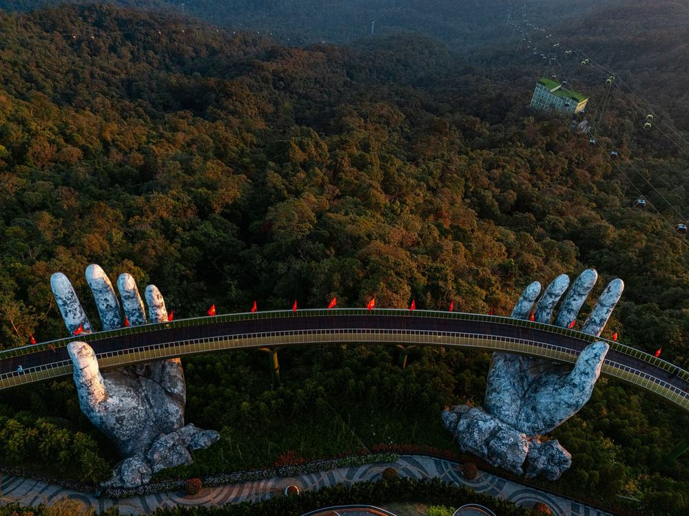
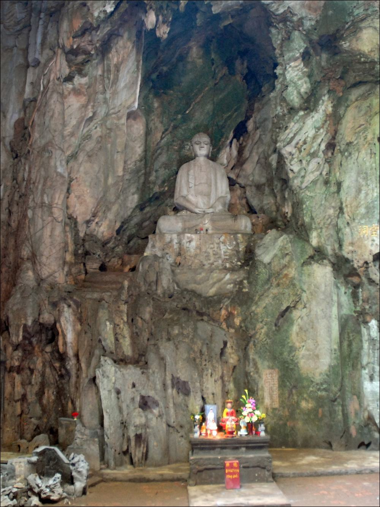
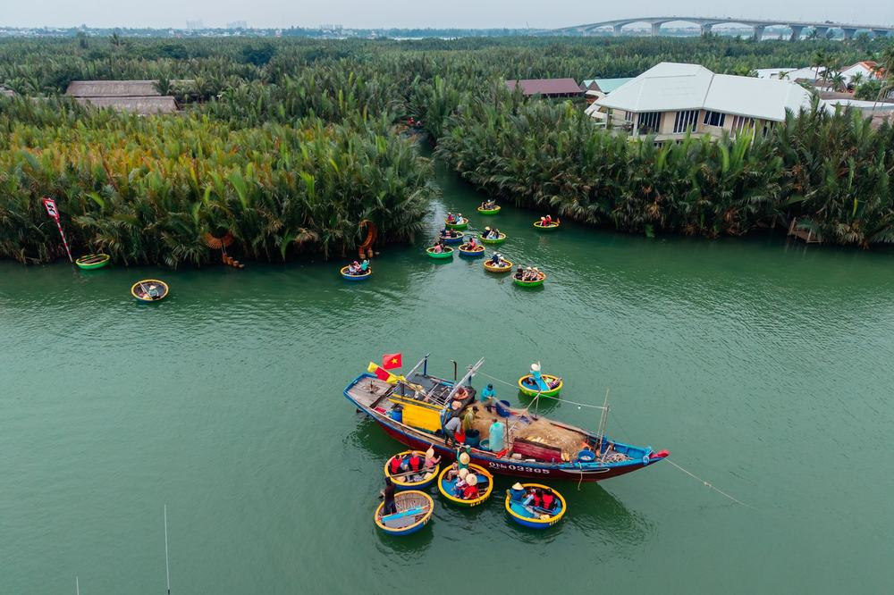

부모님 다낭 노랑풍선 패키지 여행 54만 900원, 선택관광 없이 바나힐·호이안 야경에 마사지 두 번 든 인천 출발 3박 5일
인천에서 저녁 비행기로 떠나 다낭 5성급 호텔에 세 밤 묵고, 둘째 날은 오행산에서 호이안 등불 골목까지, 셋째 날은 바나힐 골든브릿지를 도는 일정. 선택관광이 하나도 없고 가이드·기사 경비까지 값에 들어 있다는 게 이 상품의 특징.
직접 다녀온 후기가 아니라, 노랑풍선 일정표와 포함·불포함 원문을 하나씩 따져 본 글임.
결론 — 추천. 50만원대에 바나힐·호이안 야경·마사지 두 번을 한 번에 넣을 수 있음. 다만 쇼핑센터 세 번이 싫으신 분은 맞지 않음.
오늘 기준 출발일별 요금 보기
https://package-researcher.github.io/r/danang_ybtour_20261111-t.html
| 항목 | 내용 |
|---|---|
| 가격 | 1인 540,900원 (성인 · 11월 출발 기준) · 2인 1,081,800원 |
| 여행사 | 노랑풍선 |
| 항공 | 트리니티항공 직항 · 인천 19:00 → 다낭 22:20 / 다낭 23:35 → 인천 06:05 |
| 숙소 | 5성급 호텔 3박(무엉탄 럭셔리·윈덤 솔레일·골든베이·그랜드투란 또는 동급) · 2인 1실 |
| 일정 | 3박 5일 · 버스 · 한국어 가이드 · 선택관광 없음 · 쇼핑센터 3회 · 가이드·기사 경비 포함 · 최소 8명 |
▶ 내 출발일 오늘 기준 요금 확인 (제휴 링크 · 예약 시 수수료를 받으며 가격은 같습니다)
▶ 10월 26일 기준 다낭 패키지 최저 28만 900원부터 — 출발일별 값 한 화면에: 비교 페이지
| 번호 | 내용 | 한 줄 답 |
|---|---|---|
| 1 | 이 값에 들어 있는 것 | 식사 9회·마사지 2회 |
| 2 | 현장에서 더 낼 돈 | 2인 약 2만원 |
| 3 | 일정과 체력 | 2일차가 제일 김 |
| 4 | 자유여행으로 짜면 | 1인 약 85만원 |
| 5 | 맞는 분 · 안 맞는 분 | 쇼핑 괜찮은 분 |
1. 이 값에 들어 있는 것

54만 900원 안에 든 걸 세어 보면 이렇다.
- 트리니티항공 인천–다낭 직항 왕복, 유류할증료·공항세 포함
- 5성급 호텔 3박(2인 1실), 호텔 조식 3회
- 특식 6회. 현지식 코스, 소불고기전골, 퓨전뷔페, 샤브샤브와 쭈꾸미볶음, 해물수끼, 무제한 삼겹살. 망고 도시락도 1인 1개
체험도 꽤 많이 들어 있음.
- 바나힐 케이블카·골든브릿지·꽃정원·판타지파크
- 호이안 구시가지(내원교·풍흥의 집·떤키의 집·광조회관), 야경투어와 씨클로, 바구니배, 투본강 배
- 안방비치 음료 1잔, 한강 크루즈 음료 1잔(약 60분), 스카이라운지 야경 음료 1잔
- 전신마사지 120분 + 발마사지 90분, 가이드·기사 경비, 여행자보험

선택관광 목록은 아예 없음. 대신 쇼핑센터를 세 번 들르고(노니·침향, 잡화, 커피 · 각 1시간), 구매는 자유.
호텔은 무엉탄 럭셔리, 윈덤 솔레일, 골든베이, 그랜드투란 가운데 한 곳이나 동급으로 출발 1~2일 전에 정해짐. 방은 모두 일반 전망 객실이고 트윈·더블은 고를 수 없다. 윈덤 솔레일 디럭스 오션뷰는 3박 1인 4만원, 멜리아 빈펄 리버프론트는 5만원 추가로 바꿀 수 있어서 담당자에게 물어보면 됨.
2. 현장에서 더 낼 돈
| 항목 | 금액 | 비고 |
|---|---|---|
| 가이드·기사 경비 | 0원 | 상품가에 포함 |
| 마사지 팁 | 14달러 | 전신 $4 + 발 $3, 1인 $7 × 2명 |
| 바구니배·씨클로 매너팁 | 고르는 만큼 | 자율 · 관례는 $2~4 |
| 혼자 쓰는 방 | 200,000원 | 1인 예약일 때만 |
| 연말·공휴일 호텔 추가 요금 | 해당 시 | 써차지·갈라디너, 출발 전 결제 |
| 합계 (2인) | 14달러 (약 2만원) | 상품가 2인 1,081,800원 + 마사지 팁 |
두 사람이면 반드시 더 내는 돈은 마사지 팁 14달러뿐. 1달러짜리 소액권을 몇 장 챙겨 가면 바구니배·씨클로에서 편함.
3. 일정과 체력

| 일차 | 가는 곳 | 버스 | 걷기 | 점심 · 저녁 |
|---|---|---|---|---|
| DAY 1 | 19:00 인천 출발 → 22:20 다낭 → 호텔 | 약 0.3시간 | 적음 | 없음 |
| DAY 2 | 오전 호텔 휴식 → 오행산 → 안방비치 → 바구니배 → 투본강 → 호이안 구시가지 → 야경·씨클로 → 다낭 | 약 2시간 | 많음 | 현지식 · 리조트 레스토랑 |
| DAY 3 | 바나힐 케이블카·골든브릿지 → 사랑의 부두 → 발마사지 → 한강 크루즈 | 약 2시간 | 보통 | 뷔페 · 한식 |
| DAY 4 | 쇼핑센터 → 다낭 대성당 → 영흥사 → 미케비치 → 전신마사지 → 스카이라운지 → 공항 | 약 1.5시간 | 보통 | 현지식 · 한식 |
| DAY 5 | 23:35 다낭 출발 → 06:05 인천 | — | 적음 | 없음 |
제일 긴 날은 둘째 날. 오전을 호텔에서 쉬고 나가지만, 오행산 계단과 호이안 골목을 걸어 다니고 밤 야경까지 본 뒤 다낭까지 약 40분 버스를 탐. 오행산은 엘리베이터가 있어 그걸 타면 무릎 부담이 줄어듦.
셋째 날 바나힐은 케이블카로 오르지만 산 위가 서늘해서 얇은 겉옷이 있으면 편함. 넷째 날은 저녁에 전신마사지를 받고 밤 11시 35분 비행기를 타는 흐름이라, 호텔 없이 공항으로 가는 날.
같은 목적지 다른 여행사 패키지, 쇼핑·선택관광·가이드 경비까지 비교
https://pkg-lab.com/go/?q=%EB%8B%A4%EB%82%AD+11%EC%9B%94&utm_source=blog&utm_medium=post&utm_campaign=daily
4. 자유여행으로 짜면

| 항목 | 금액 | 근거 |
|---|---|---|
| 인천–다낭 왕복 항공 | 321,000원 | ICN↔DAD 직항 왕복 1인 (패키지와 같은 출발일 · 2026-10-26 마이리얼트립 조회) |
| 5성급 호텔 3박 | 150,000원 | 2인 1실 1인분 (추정) |
| 바나힐 케이블카 입장 | 52,000원 | 1인 (추정) |
| 호이안 투어·바구니배·씨클로·크루즈 | 70,000원 | 1인 (추정) |
| 마사지 2회 (120분 + 90분) | 70,000원 | 1인 (추정) |
| 식사 (점심 3 · 저녁 3) | 90,000원 | 현지식·한식 (추정) |
| 공항 이동 · 차량 | 80,000원 | 공항·호이안·바나힐 왕복 2인 나눔 (추정) |
| 여행자보험 · 유심 | 15,000원 | 5일 기준 (추정) |
| 가이드 | — | 자유여행은 없음 |
| 합계 | 약 848,000원 |
직접 짜면 1인 약 85만원. 패키지는 54만 900원이라 패키지가 30만원쯤 덜 듦. 대신 쇼핑센터 세 번이 일정에 들어 있고, 정해진 순서대로 움직인다.
이동 차이도 있음. 호이안과 바나힐은 다낭 시내에서 각각 차로 한참 가야 하는 곳이라, 직접 가면 그때마다 차를 따로 불러야 함. 패키지는 전용 버스가 묶어서 다닌다.
5. 맞는 분 · 안 맞는 분
| 맞는 분 | 안 맞는 분 |
|---|---|
| 50만원대에 바나힐·호이안·마사지를 한 번에 넣고 싶은 분 | 쇼핑센터 3회(각 1시간)가 싫은 분 |
| 선택관광 고르기 없이 값 하나로 끝내고 싶은 분 | 밤 10시 도착·밤 11시 반 출발이 힘드신 분 |
| 퇴근 뒤 밤 비행기 출발이 오히려 편한 분 | 호텔을 미리 정해야 마음 편한 분(업그레이드 문의는 가능) |
자주 묻는 질문
Q. 다낭 패키지 가이드 팁은 따로 내나요?
A. 안 냄. 기사·가이드 경비가 상품가에 들어 있음. 따로 챙길 건 마사지 팁(전신 $4, 발 $3)과 자율 매너팁 정도.
Q. 다낭 패키지 노옵션 맞나요?
A. 맞음. 선택관광 목록이 없고, 바나힐·호이안 야경·크루즈·마사지 두 번이 다 기본 일정에 있음.
Q. 다낭 패키지 쇼핑센터는 몇 번 가나요?
A. 세 번. 노니·침향, 잡화, 커피 매장이고 각 1시간쯤. 날짜는 현지 사정으로 바뀔 수 있고 구매는 자유.
마무리
선택관광 걱정 없이 바나힐과 호이안, 마사지 두 번까지 한 값으로 묶은 일정. 쇼핑센터 세 번과 밤 비행기가 괜찮은 분이라면 50만원대에서 꽤 많이 들어 있는 편이다.
출발일마다 값이 달라서, 가시려는 날짜 요금부터 확인해 보면 됨.
오늘 기준 출발일별 요금 보기
https://package-researcher.github.io/r/danang_ybtour_20261111-e.html
이 글에는 네이버 제휴 링크가 포함되어 있으며, 링크를 통해 예약하시면 일정 수수료를 받습니다. 가격은 동일합니다. 가격과 구성은 2026년 10월 26일 확인 기준이며 출발일에 따라 달라질 수 있습니다.
▶ 이 상품, 영상으로 보기 (유튜브)
▶ 다낭 패키지 오늘 값 나란히 비교
▶ 같은 목적지 다른 여행사 패키지, 쇼핑·선택관광·가이드 경비까지 비교: pkg-lab.com
사진 출처 (저작자 · 라이선스):
Grotte Huyen Khong — CC BY 2.0 (Wikimedia Commons) 원본

그 밖의 사진: Pexels
쇼츠·클립 영상과 사진:
4K🇻🇳 베트남 다낭 핑크성당⛪️ 영응사 오행산 암푸동굴 마블마운틴 호이안도자기마을 베트남 — hikangs 4K (YouTube, CC BY) 원본
2024-12-07 Quan The Am statue at the Linh Ung Pagoda 2 — CC BY 4.0 (Wikimedia Commons) 원본

Love Lock Bridge Da Nang 05.19 — CC BY 4.0 (Wikimedia Commons) 원본

Da Nang Cathedral — CC BY-SA 4.0 (Wikimedia Commons) 원본